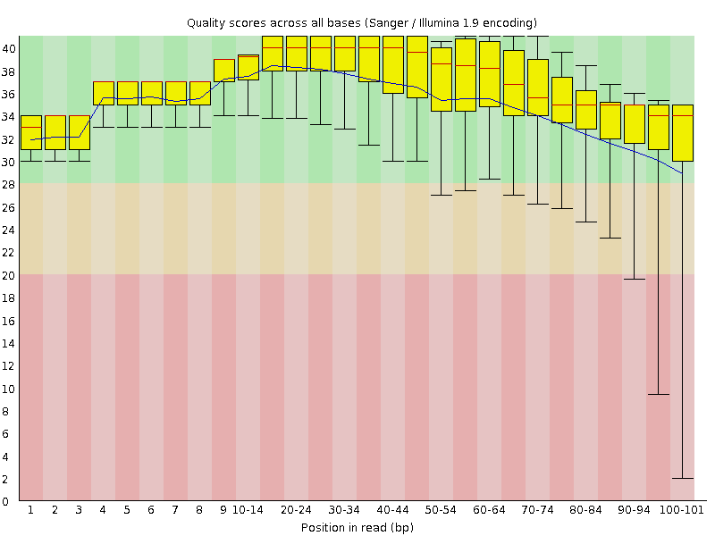
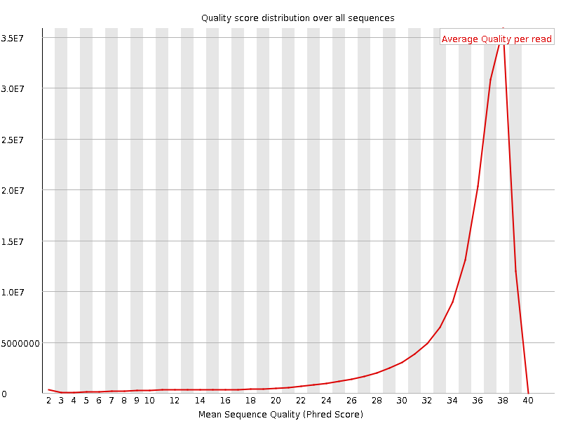
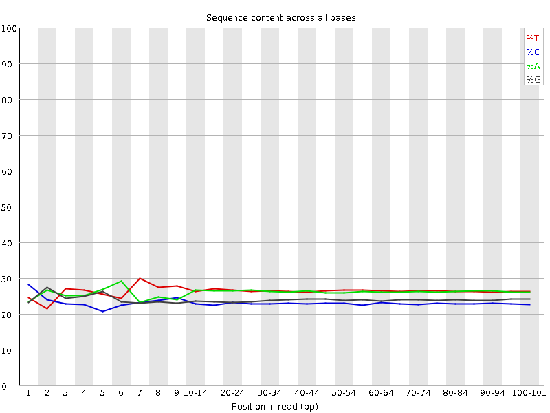
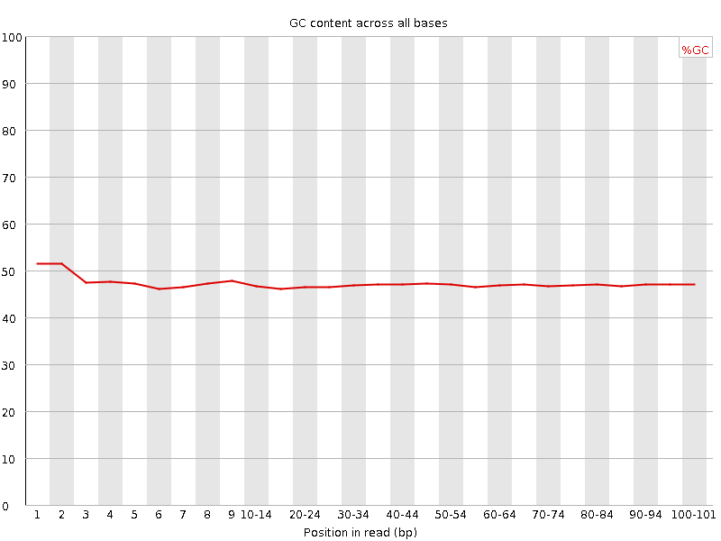
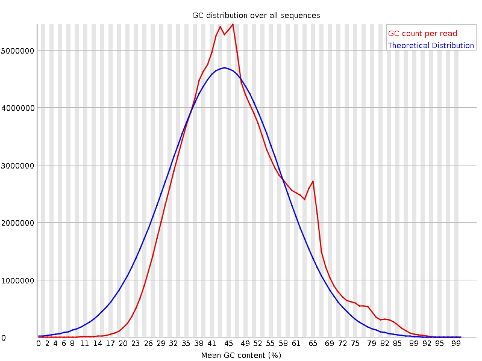
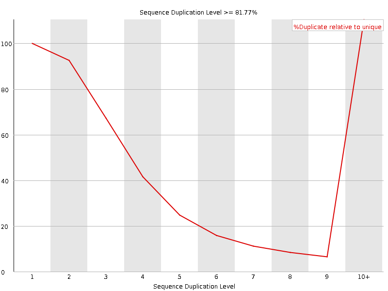
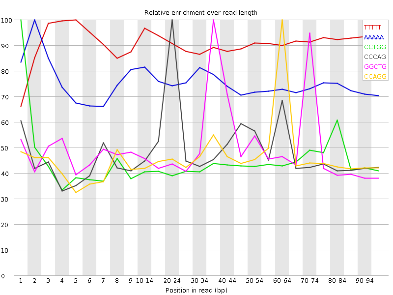

![[OK]](Icons/tick.png) Basic Statistics
Basic Statistics
| Measure | Value |
|---|---|
| Filename | SRR534335_2.fastq |
| File type | Conventional base calls |
| Encoding | Sanger / Illumina 1.9 |
| Total Sequences | 157580617 |
| Filtered Sequences | 0 |
| Sequence length | 101 |
| %GC | 47 |
Per base sequence quality

Per sequence quality scores

Per base sequence content

Per base GC content

![[WARN]](Icons/warning.png) Per sequence GC content
Per sequence GC content

Per base N content

Sequence Length Distribution

![[FAIL]](Icons/error.png) Sequence Duplication Levels
Sequence Duplication Levels

Overrepresented sequences
| Sequence | Count | Percentage | Possible Source |
|---|---|---|---|
| CGGTGGCGCGTGCCTGTAGTCCCAGCTACTCGGGAGGCTGAGGCTGGAGG | 578432 | 0.3670705261929518 | No Hit |
| CGGTGGCGCGTGCCTGTAGTCCCAGCTACTCGGGAGGCTGAGGTGGGAGG | 524730 | 0.3329914617608078 | No Hit |
| CCTGGCCTTTCTATTAGCTCTTAGTAAGATTACACATGCAAGCATCCCCG | 426184 | 0.2704545826216685 | No Hit |
| CCCAAACCCACTCCACCTTACTACCAGACAACCTTAGCCAAACCATTTAC | 301038 | 0.19103745481590545 | No Hit |
| CTGGCCTTTCTATTAGCTCTTAGTAAGATTACACATGCAAGCATCCCCGT | 286986 | 0.18212011443006343 | No Hit |
| GGTGGCGCGTGCCTGTAGTCCCAGCTACTCGGGAGGCTGAGGCTGGAGGA | 231790 | 0.1470929638510046 | No Hit |
| GGTGGCGCGTGCCTGTAGTCCCAGCTACTCGGGAGGCTGAGGTGGGAGGA | 216503 | 0.13739189763421222 | No Hit |
| CAAACCCACTCCACCTTACTACCAGACAACCTTAGCCAAACCATTTACCC | 175439 | 0.11133285510615813 | No Hit |
| GGCCTTTCTATTAGCTCTTAGTAAGATTACACATGCAAGCATCCCCGTTC | 171291 | 0.1087005516674681 | No Hit |
Kmer Content

| Sequence | Count | Obs/Exp Overall | Obs/Exp Max | Max Obs/Exp Position |
|---|---|---|---|---|
| TTTTT | 79828785 | 3.960293 | 4.3470607 | 5 |
| AAAAA | 63549960 | 3.266135 | 4.3680277 | 2 |
| CCTGG | 36341155 | 2.9161127 | 6.5965705 | 1 |
| CCCAG | 33378855 | 2.8053074 | 5.62217 | 20-24 |
| GGCTG | 33530130 | 2.5870667 | 5.0654955 | 35-39 |
| CCAGG | 29625225 | 2.3940737 | 5.0426106 | 60-64 |
| CTGGG | 29979305 | 2.3130975 | 5.0133433 | 70-74 |
| GCCTG | 28680795 | 2.3014247 | 5.06239 | 10-14 |
| CCAGC | 26508755 | 2.2279136 | 5.2714195 | 20-24 |
| CTGGC | 27718000 | 2.224167 | 6.070202 | 2 |
| GGTGG | 24969515 | 1.8524619 | 11.076427 | 2 |
| TGGCC | 22123320 | 1.7752349 | 5.3780866 | 3 |
| GTGGC | 20306980 | 1.566815 | 10.870305 | 3 |
| ACCCA | 20338130 | 1.556673 | 5.062357 | 6 |
| GGCCT | 19025345 | 1.5266451 | 5.1389966 | 4 |
| GTGCC | 16654995 | 1.3364418 | 5.2893643 | 9 |
| GGGTG | 17537480 | 1.3010871 | 5.15688 | 95-97 |
| GGCGC | 14264215 | 1.2657453 | 11.926301 | 5 |
| TGGCG | 12012690 | 0.92685676 | 10.161211 | 4 |
| GCGCG | 9756430 | 0.86574376 | 11.4915495 | 6 |
| CGTGC | 9482175 | 0.76087534 | 10.856637 | 9 |
| GCGTG | 9373665 | 0.72323895 | 10.095415 | 8 |
| CGGTG | 9310740 | 0.7183839 | 10.553244 | 1 |
| CGCGT | 4928300 | 0.3954601 | 10.009738 | 7 |